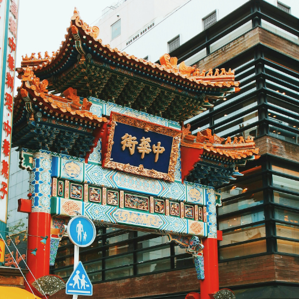

Yokohama Chinatown – A Taste of China in the Heart of Japan
Yokohama Chinatown (横浜中華街) is Japan's largest and most famous Chinatown, attracting millions of visitors each year. Located in the heart of Yokohama, this lively neighborhood is a mix of traditional Chinese architecture, authentic cuisine, and vibrant cultural events. Whether you’re a food lover, culture enthusiast, or curious traveler, Yokohama Chinatown offers a unique experience that blends Japanese and Chinese influences.
Discover Authentic Chinese Cuisine
Yokohama Chinatown is renowned for its authentic Chinese restaurants, offering everything from dim sum to Peking duck. Explore bustling streets lined with eateries, each serving traditional dishes made from fresh ingredients. Don’t miss the chance to try specialties such as xiaolongbao (soup dumplings), chow mein, and kung pao chicken.
Cultural Highlights and Festivals
The vibrant streets of Yokohama Chinatown are also home to various cultural festivals and events, including the Chinese New Year celebrations, which are a major highlight. During this time, the streets come alive with dragon dances, lantern displays, and fireworks. The Chinese Temple located within the neighborhood adds to the cultural atmosphere, offering a peaceful spot to explore.
Shop for Unique Souvenirs
Stroll through the vibrant streets of Yokohama Chinatown and discover an array of shops selling Chinese goods, from traditional tea sets and jade jewelry to decorative lanterns and trinkets. These shops are perfect for picking up unique souvenirs or gifts for friends and family.
How to Get to Yokohama Chinatown
- 🌸 From Yokohama Station: Take the Minatomirai Line to Motomachi-Chukagai Station (approx. 5 minutes)
- 🌸 Direct access from Motomachi-Chukagai Station to the Chinatown entrance
- 🌸 Opening hours: Open year-round, with extended hours during festivals
- 🌸 Best photo spots: The iconic Chinatown entrance gate, Chinese temples, and colorful lanterns
Why Yokohama Chinatown is a Must-Visit for Travelers
Whether you’re indulging in Chinese cuisine, enjoying a cultural festival, or simply soaking in the lively atmosphere, Yokohama Chinatown offers a rich and colorful experience that captures the essence of both Chinese and Japanese cultures. It’s a must-visit spot for food lovers and those interested in vibrant cultural districts.
Tags: Yokohama Chinatown, Chinese food in Japan, Chinatown Japan, Chinese culture Japan, Yokohama attractions, authentic Chinese restaurants, Chinese festivals Yokohama
Planning to visit Yokohama Chinatown?
To get the most immersive and insightful experience, we recommend booking a certified local private guide from our team. All our guides are licensed professionals officially recognized by the Japanese government, offering personalized tours tailored to your interests. Please contact your selected guide in advance to confirm availability and get expert assistance for your trip.